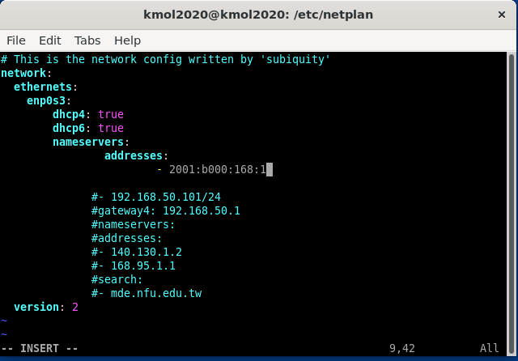
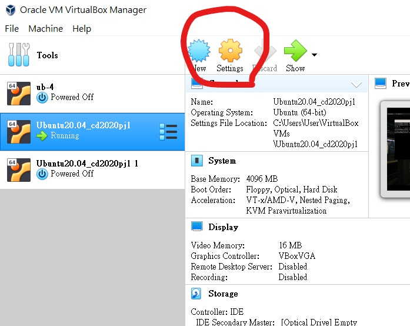
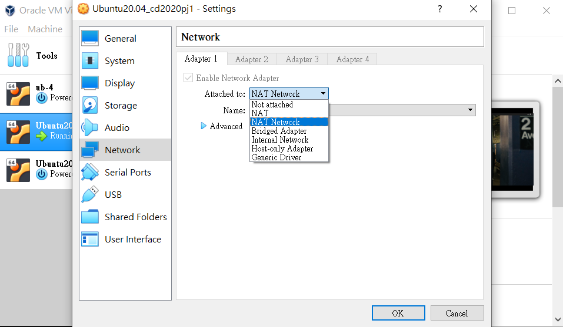

WEEK 12-18 <<
Previous Next >> week 13
week 12
Virtualbox網路設定 :
首先要學會抓到DHCP中的IP
ifconfig
如果出現

沒有安裝工具，執行指令 :
sudo apt install net-tools
如果沒辦法安裝套件( 沒有網路) :
cd etc
cd apt
cd apt.conf.d
在該處執行 :
sudo vi proxy.conf
給它內容 :
Acquire::http::proxy "http://[2001:288:6004:17:此處填寫當下的port號]";
更新當前修改內容
sudo apt update
要瞭解到網路是怎麼設定的
cd /etc/netplan
和
ls -l
因為那個yaml檔不是在工作目錄，所以用sudo執行
sudo vi 00-installer-config.yaml

確認dhcp4、6都可以 ( 也確認中華電信的DNS : 2001:b000:168::1)

再輸入一次 ifconfig ( 或再安裝一次 net tools )
這樣即可看到他內部設定的IP

如果不行的話記得到 :


...
內部看到的 IP 也要在 Virtualbox 上定位
file / Preferences / Network
ipv4部分 :

( □ Guest IP是經由上面 ifconfig 所查尋出來的 ipv4 結果 )
ipv6部分 :


利用 putty 連線虛擬主機 :


這裡所用的是上面 IP 設定的 port 號

上圖的 X display location 是 :
localhost:0.0
下圖為成功 (login as : kmol2020)

下載 Xming :
https://sourceforge.net/projects/xming/
https://github.com/s40723110/cd2020/tree/master/Xming
後續 :

WEEK 12-18 <<
Previous Next >> week 13